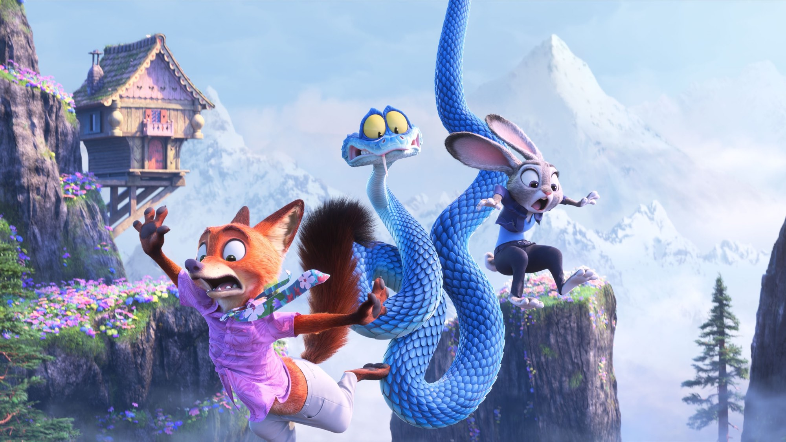
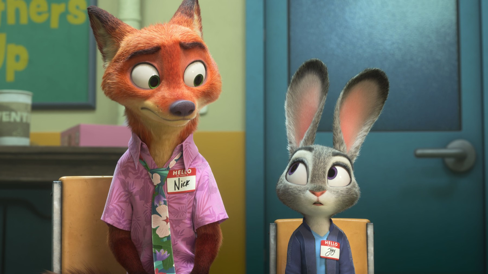
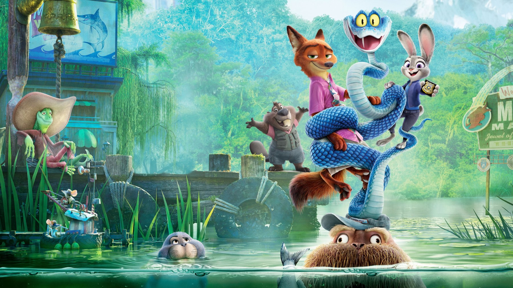

Zootopia 2
Il mistero del serpente Gary mette sotto pressione Judy e Nick, ma il film trova il suo momento più vero quando la coppia si incrina
La crepa tra Judy Hopps e Nick Wilde vale più del giallo che dovrebbe tenerli insieme: Zootopia 2 funziona quando i due litigano sul serio, su una parete di roccia, e un registratore a forma di carota cade e si rompe. Il caso del serpente Gary è costruito bene, ma preferisce la chiarezza al rischio, perché il film pensa anche ai bambini.
Una coppia in terapia
Nove anni dopo il primo film, per i due protagonisti è passata appena una settimana. Li ritroviamo partner di polizia che litigano di continuo, tanto che il capitano Bogo minaccia di separarli se non vanno dalla terapia di coppia della dottoressa Fuzzby, una quokka. La premessa è comica, però dice già dove punta Jared Bush, che firma la sceneggiatura e dirige insieme a Byron Howard: il caso è il pretesto, il rapporto è la posta.
Al gala della famiglia Lynxley, Nick vede una figura incappucciata appesa al lampadario. Cade sul palco e si rivela una vipera, Judy la raggiunge ed esita, perché il serpente le dice di non essere cattivo, mentre Nick arriva con una padella e chiude la questione. Il primo segno della crepa è qui, perché lei ascolta e lui colpisce, e da lì i due diventano ricercati, dato che Milton Lynxley li accusa di complicità.

Il giallo e il torto antico
La caccia a Gary De'Snake (nella versione originale lo doppia Ke Huy Quan) porta Judy e Nick fino a Mercato Pantano, un quartiere semiacquatico dove una comunità di rettili vive nel relitto di una nave. Il basilisco Jesús racconta che la loro casa d'origine è stata sepolta quando si è costruita Tundratown. Funziona perché il pregiudizio non resta una morale da recitare, ma diventa il motore dell'indagine, e ogni indizio sposta un po' il nostro giudizio sul passato della città.
C'è un dettaglio che il film usa bene, perché il gala dei Lynxley celebra l'antenato Ebenezer come fondatore delle barriere climatiche: chi festeggia la storia ufficiale è la stessa famiglia che ha più da perdere se la storia cambia.

La scena che vale il film
Più delle citazioni e dell'azione, ci resta addosso la parete rocciosa. Dopo l'inseguimento nei tubi dell'acqua, dove Judy rischia di annegare e Nick la salva trovando un'uscita di sfogo, i due scalano la montagna verso una baita abbandonata e litigano sul serio. Nell'agitazione il registratore a carota, il regalo che Judy aveva fatto a Nick dopo il primo caso risolto insieme, scivola. Cadendo si rompe, ma il film non ci costruisce un discorso sopra: lascia che la rottura si senta prima che i due la ammettano.
È il punto in cui la commedia di coppia diventa un dramma di fiducia: lei insegue l'indizio mentre lui vorrebbe lasciar perdere, e per la prima volta nessuno dei due ha del tutto ragione.
Cosa si è scelto di tagliare
Una scelta di prudenza spiega anche il limite del film. Jared Bush ha raccontato a Film Stories, il 3 dicembre 2025, che una scena in prigione riprendeva battuta per battuta la presentazione di Clarice a Lecter ne Il silenzio degli innocenti: Jenny Slate aveva registrato tutto il dialogo e la sequenza era già animata. Bush la ricorda lunga cinque minuti, mentre in un'altra intervista, riportata da Popverse, parla di quattro. Per Popverse il motivo del taglio era il rischio di perdere il pubblico più giovane, e nel film resta solo un breve momento in cui un cattivo è presentato in stile Hannibal Lecter. È la stessa prudenza della carota che si rompe senza discorsi: il film suggerisce, perché preferisce non spiegare troppo.
La scelta è comprensibile, ma indica una direzione: tra il cinefilo e la famiglia, Zootopia 2 sceglie la famiglia, e lo stesso istinto spiega perché i cattivi si leggano da lontano.
Cosa non funziona
Il film mette in fila gli indizi troppo presto, perché li ammucchia tutti nel primo atto: un gala in onore di un antenato fondatore, un diario rubato che il serpente dice di tenere a prova delle proprie ragioni, una famiglia potente che accusa i due poliziotti per prima. Chi ha visto qualche giallo capisce da che parte guardare molto prima di Judy, perciò la tensione cala. Enrico Azzano, su Quinlan, scrive che snodi e trasparenza dei cattivi non sono «realmente complessi o spiazzanti», e per noi è il difetto principale. Peter Bradshaw, sul Guardian, ha dato due stelle su cinque e ha parlato di un film fatto a tavolino: non siamo d'accordo con il verdetto, però coglie il rischio di un sequel perfetto nella forma e prudente nella sostanza.
Le voci italiane
Nell'edizione italiana Ilaria Latini e Alessandro Quarta sono Judy e Nick, mentre Max Angioni dà voce a Gary e Michela Giraud a Nibbles, la castora dal blog complottista che i due incontrano a Mercato Pantano. Leo Gullotta è Mr. Big.
I numeri
A novembre 2026 il film ha incassato circa 1,87 miliardi di dollari nel mondo, di cui 428,1 milioni in Nord America e 1,442 miliardi sugli altri mercati, con un esordio mondiale da 560,3 milioni; il budget dichiarato è di 150 milioni. È il secondo film d'animazione per incasso di sempre. Ha il 92% di giudizi positivi su Rotten Tomatoes (voto medio 7,5 su 10), 73 su Metacritic e una A su CinemaScore, ha vinto il BAFTA come miglior film d'animazione a febbraio 2026 ed è stato candidato all'Oscar, al Golden Globe e a sette premi Annie.
Dove vedere Zootopia 2
Dall'11 marzo 2026 il film è disponibile in abbonamento su Disney+, ed è a noleggio sulle principali piattaforme digitali come Apple TV e Prime Video. Il 15 agosto 2026 Disney ha annunciato che è in sviluppo un terzo capitolo.
Lo consigliamo a chi ha amato il primo film e vuole vedere Judy e Nick in difficoltà, ma anche a una serata in famiglia con bambini dai sei anni in su; chi cerca un giallo che spiazzi troverà più rischio altrove.
Zootopia 2 è un sequel brillante perché sa incrinare la coppia che tutti amavano, ma ha cattivi che si indovinano e una prudenza che si vede nelle scene tagliate.
Domande frequenti
Come si chiama Zootopia 2 in Italia?
In Italia il film è uscito con il titolo Zootropolis 2, il 26 novembre 2025.
Dove vedere Zootopia 2 in streaming?
In abbonamento su Disney+, dove è disponibile dall'11 marzo 2026, e a noleggio sulle principali piattaforme digitali.
Quanto ha incassato Zootopia 2?
Circa 1,87 miliardi di dollari nel mondo, a novembre 2026: è il secondo film d'animazione con il maggior incasso di sempre.